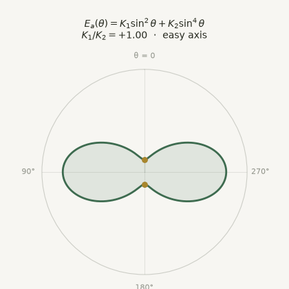

Example: preprint under review
arXiv preprint · under review
Placeholder preprint entry — newest items sit at the top of the stream, so the page always opens on your most recent work.
Working on the use of AI in science and mathematics. This page reads top-to-bottom as the story of that work: what's happening now, then everything that led here.
arXiv preprint · under review
Placeholder preprint entry — newest items sit at the top of the stream, so the page always opens on your most recent work.
Python script · matplotlib animation rendered to GIF
Placeholder software item demonstrating an embedded animation: a Python script (scripts/anisotropy_animation.py) renders the energy surface \(E_{\mathrm{a}}(\theta)\) with matplotlib's FuncAnimation and writes a looping GIF with the Pillow writer. As \(K_1/K_2\) sweeps, the easy directions (gold dots) migrate from axis to cone to plane.

Example Journal of Materials Informatics · with A. Coauthor, B. Coauthor
Placeholder journal article — entries can carry mathematics, written as LaTeX in the page source. The kind of closed-form model symbolic regression recovers:
with anisotropy constants \(K_1\), \(K_2\) fitted per material.
Python package · v1.0 released
Placeholder software release — releases interleave with papers so the timeline shows the full picture of output.
Example conference proceedings
Placeholder conference paper entry.
GitHub Repo · started fall 2025 and ended summer 2026.
Code for articles in SPWLA journal Petrophysics, Feb 2014 - Jun 2026. Main code collected in a petrolib folder.